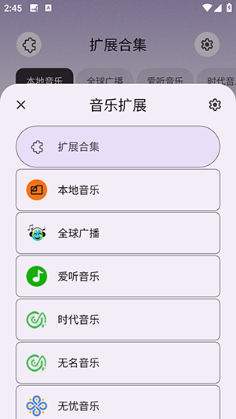

Rhythm 上手几天，终于找到能同时听音乐和有声书的播放器
空壳本体加插件生长的 Rhythm 用起来什么感觉？我装了三个音源、挂载了网盘，把好的糟的都聊透，帮你判断值不值得折腾。
我手机里以前同时装着 QQ 音乐、喜马拉雅和一个本地播放器。不是我想贪多，是每个都有硬伤——音乐 App 有的歌灰色永远下不来，听书 App 广告弹窗关不掉，本地播放器又搜不到在线内容。朋友从Rhythm官网看到后扔给我，说这玩意儿本体像个空盒子，装什么插件就长什么功能。我抱着"又来一个套壳播放器"的心态装了，结果用了一周没卸载。
初印象：界面简到让人怀疑是不是没装完
安装包从下载拿的，体积不大，装完打开第一眼我愣了一下——底部只有两个标签：主页和媒体库。主页顶部空空的，媒体库也只有本地音乐那一个栏目。这就完了？我反复确认是不是没联网，还是第一次启动没加载出来。
后来才反应过来，这就是它的设计哲学。本体真的就是个空壳，所有功能都靠插件"长"出来。进设置里找到扩展管理界面，我才看到按分类排列的一长串插件——音乐类、听书类、网盘类，还有下载工具和油管插件。点进去每个都有大小说明，下载类大概八九兆，装完直接就生效。

说实话这种空壳设计我一开始不太习惯，毕竟用过的播放器第一次打开都是满满当当的功能给你看。但转念一想好处是明确的：界面永远不臃肿。我装了爱听音乐、有声小说和一个网盘挂载之后，底部还是那两个标签，不会突然多出一排 Tab 让我找不到北。顶部标签栏倒是长了三栏出来，左上角还有个筛选按钮，不想看的栏目勾掉就行。
用了几天，挑三个最实在的体验说
音源装上就能播，不用来回切 App
我先装了爱听音乐，切到主页顶部新长出来的那一栏，热门歌手和推荐歌单直接就刷出来了。这个体验最让我惊喜的地方是——不用登录账号就能用。以前用某些音乐 App 要么得冲会员才能听全，要么得扫码登录一堆东西。Rhythm 这边装完插件直接点歌就能播，界面也没广告弹窗干扰。
第二张图是我切到有声小说栏目时截的，说实话听书功能比我想象的完整。专辑列表、章节选择、断点续播都有，甚至还能调播放速度。以前听书我得专门开喜马拉雅，现在直接在同一个界面里音乐和有声书切换，省了好多来回切 App 的麻烦。
网盘挂载直接播，不用下载到本地
我装了网盘类的插件之后，把家里存了一堆无损音乐的 Alist 挂了进来。本来以为又得折腾下载到本地，结果目录直接就列出来了——点一个 flac 文件就能播，进子目录返回上级也都正常。这个对我来说太实用了，手机存储本来就紧张，能直接在线播网盘文件等于瞬间多了好几十 G 的曲库。
不过网盘这边也不是没毛病，长按下文件没有批量选择，想把一整个专辑加入播放列表只能逐张点。这个在Rhythm文档里也明写了是已知限制，不是我不会用。说实话这个体验确实有点别扭，特别是我想批量整理的时候，只能跑电脑端去操作。
媒体库按类型汇总，整理曲库时意外好用
主页是按插件来源分的——爱听一栏、有声一栏、网盘一栏。但媒体库就不一样了，它不管你是从哪个插件来的，统一按专辑、歌手、文件夹来整理。我平时想系统翻翻自己存了什么歌的时候，直接切媒体库按专辑看，比在主页的各个栏目里跳来跳去清晰多了。两个标签的分工我用了几天才完全摸透：主页负责快速访问，媒体库负责系统整理，这种分法比什么功能都塞在主页里要合理。
必须说的糟心事儿
说好的也得说糟的。第一个就是没有备份。Rhythm 目前没有账号体系，也没云端同步。我换了手机之后，所有装的插件、网盘配置、收藏和歌单全得手动重建。文档里说目前只能手动记录装了哪些插件、保存好网盘地址和账号。这个对用惯了云端同步的人来说，可能是个比较大的劝退点。
第二个是清除数据丢一切。我有一次装完一个插件感觉不太对劲想卸载，结果卸不掉，最后只能清应用数据。清完之后真的是什么都没了——所有插件得重下，网盘配置得重填，歌单得重建。文档里专门有一页讲这个，说这是早期插件化架构的限制。如果你只是想卸个插件，千万别上来就清数据，多试几次卸载或者换网络重来，不然真的会后悔。
适合谁，不适合谁
适合喜欢折腾、嫌手机里播放器太多的人。Rhythm 的核心价值就是把音乐、听书、网盘这些东西集中在一个界面里，装什么插件就有什么功能，不用为了不同需求装一堆 App。对我来说，这一个就能顶之前三个用。
不太适合追求开箱即用、不想折腾的人。空壳设计意味着你得自己挑插件、自己配置网盘，没有教程带的话第一次上手可能会懵。另外没有云端同步这个事儿，对多设备用户或者经常换手机的人来说可能会介意。
用了一周我觉得 Rhythm 是那种"找对了用法就离不开"的软件。空壳加插件的思路虽然不算新鲜，但在音乐播放器这个品类里做得这么干净的不多。网盘直接播这点对我来说是刚需，省了好几十 G 的本地存储。当然现在的版本还是早期，批量操作和备份这些缺失的功能迟早会补上。对了，这套资料本体也同步在GitHub、Gitee和GitCode三个仓库上，按需选一个就行。如果你也在被多个播放器来回切换搞得心烦，可以试试这个路子。